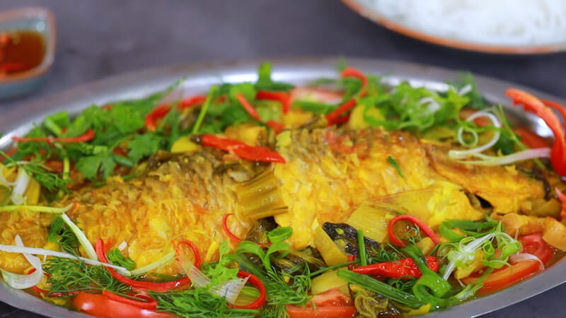

Món cá chép om dưa thịt ba chỉ là một sự kết hợp tuyệt vời giữa vị đậm đà của cá chép, chua thanh của dưa
cải và tóp mỡ giòn bùi.

Lưu ý về nguyên liệu
Chọn cá chép còn sống, màu sắc vẩy tươi tắn, mắt cá trong. Đặc biệt, chọn được cá chép đồng, sông là ngon
nhất.
Loại cá đồng có mình thuôn dài chứ không tròn, béo và dày bụng giống như cá nuôi. Cá dày bụng thường là ruột
cá
lớn hoặc là cá chép cái nhiều trứng, ít thịt và thịt không ngọt.
Bước 2
Cách làm
Sơ chế cá chép
Cá chép cạo sạch vảy, cắt vây, bỏ mang, cắt vẩy đuôi, mổ moi ruột cá. Sau đó dùng muối hạt bóp kỹ ngoài
da
cá và bên trong bụng cá cho sạch và khỏi tanh rồi rửa sạch lại, để thật ráo.
Dùng muối hạt và tiêu xay thoa 1 lớp nhẹ lên bề mặt cá và để thấm khoảng 15-20 phút.
Tiếp đến, cho dầu ăn vào chảo, lượng dầu không cần quá nhiều, nóng dầu thì cho cá vào để chiên sơ qua.
Việc
chiên qua cá sẽ giúp cá săn lại, không bị vỡ nát khi om dưa đồng thời giúp cá thơm ngậy hơn.
Chiên đến khi các mặt cá hơi xém vàng là được. Cho cá ra đĩa riêng.
Dưa chua nếu thấy bị mặn hoặc chua quá, bạn có thể rửa qua, để ráo. Nếu không may chọn phải dưa bị khú
hoặc quá mặn, sau khi rửa và để ráo nước, bạn trộn 1 ít bột ngọt và đường vào cùng với dưa.
Cà chua rửa sạch, bổ múi cau.
Hành khô bóc vỏ, băm nhỏ. Gừng cắt bỏ những phần thâm đen, bị sâu rồi rửa sạch, đập dập, băm nhỏ. Nghệ
tươi rửa sạch, đập dập.
Ớt tươi rửa sạch, đập dập, cắt thành 2 khúc.
Hành lá, thì là nhặt rửa sạch. Hành lá cắt riêng phần đầu hành màu trắng rồi tước sợi, phần thân hành
thái khúc nhỏ cùng với thì là.